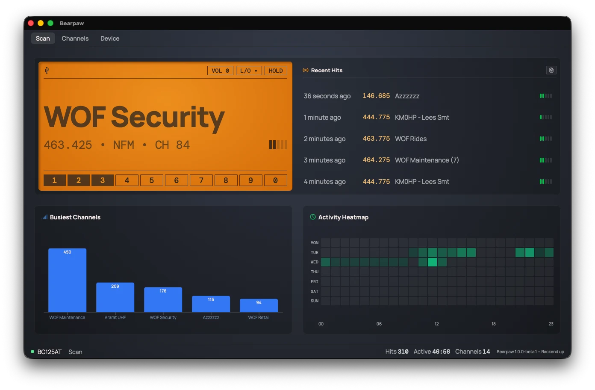

Getting Started
Plug in the scanner, launch Bearpaw, and you're watching live traffic on screen. This walks the path from cable to first hit. It assumes you know your way around a BC125AT; if a Bearpaw-specific term is new, the Glossary has it.
What you'll need
- A Uniden BC125AT scanner. Bearpaw also works with the closely related BCT125AT, UBC125XLT, UBC126AT, and AE125H.
- The USB cable that came with it, or any USB cable that carries data, not just power. A charge-only cable is the usual reason the app won't connect.
- Bearpaw installed on your computer. If you haven't done that yet, see the download section.
Step 1: Plug in and launch
Connect the scanner to your computer with the USB cable, turn the scanner on, and open Bearpaw.
The colored dot in the bottom-left corner shows where the connection stands:
- Yellow, "Connecting…": Bearpaw is reaching for the scanner, which is normal for a few seconds at launch.
- Green, "BC125AT": connected, showing your scanner's model name.
- Red, "Disconnected": no link yet. If it stays red, go to Troubleshooting.
Step 2: The first sync
Each time Bearpaw launches, it reads all 500 channels out of the scanner, and it takes a few seconds.
A "Syncing Scanner Memory" panel covers the screen with a progress bar while it runs.
Bearpaw doesn't keep a copy of your channels on the computer between sessions. It re-reads them fresh every time it starts, so what you see is what's actually in the radio.
Step 3: Watch it scan
The big amber panel is designed to resemble the display panel on your scanner, scaled up to fill the window.
Step 4: Your first hit
When the scanner lands on an active frequency, that's a hit.
- "Scanning…" is replaced by the signal. The big line shows the channel's name (its alpha tag) if it has one, or the frequency if it doesn't.
- The detail line fills in underneath: the frequency, the modulation (FM, AM, or NFM), the channel number, and, if the transmission carries one, the CTCSS tone.
- The signal-strength bars on the right fill to match the RSSI.
- When the transmission ends, the scanner resumes and the display goes back to "Scanning…".

Step 5: Look at what you've caught
Bearpaw records every hit and turns the record into a read on your local activity:
- The Recent Hits list, to the right of the big display, shows the last few active frequencies with how long ago each one happened.
- The dashboards below, a "Busiest Channels" bar chart and an "Activity Heatmap," show which channels carry traffic and when, over time.
- You can export the whole log to CSV and analyze it yourself.
Where to go next
- Everything on the Scan tab, the controls, the status bar, what each part of the display means: The Scan Tab
- Edit your channels, rename them, change frequencies, lock out the noisy ones: The Channels Tab
- Adjust the scanner itself, volume, squelch, Close Call, custom searches: The Device Tab
- Something not working? Troubleshooting